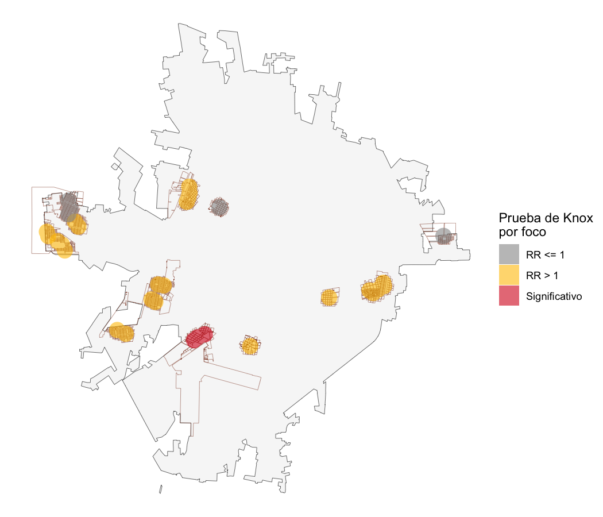
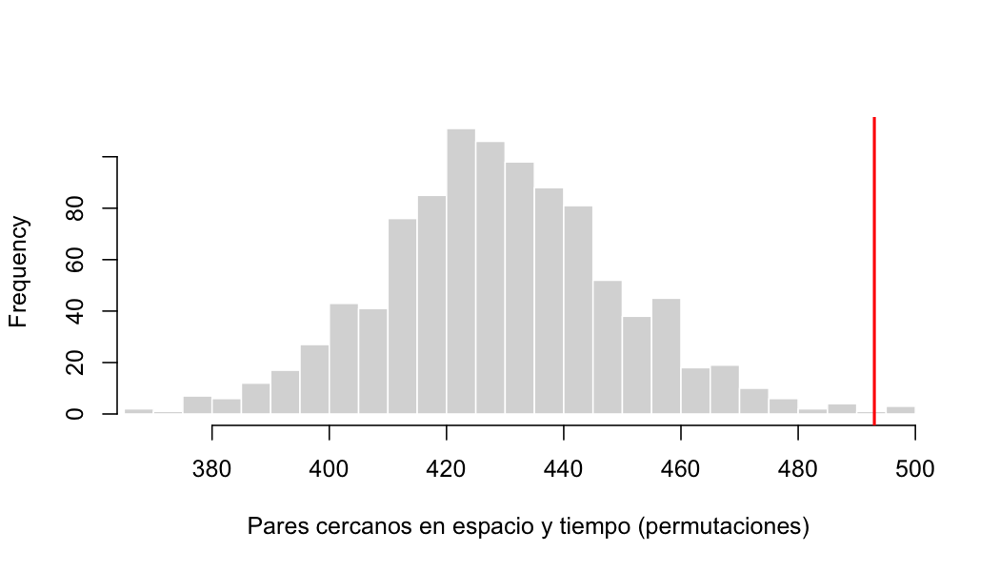
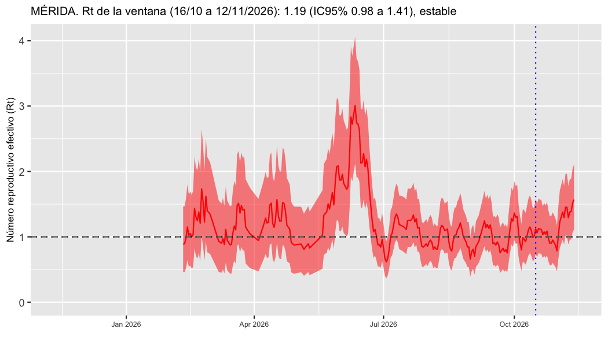

vignettes/focos_activos.Rmd
focos_activos.RmdUn foco de transmisión activa es un grupo de casos de dengue cercanos en el espacio y en el tiempo, que indica que el virus está circulando ahora en un área delimitada. Identificarlo permite dirigir el control vectorial a las manzanas donde la transmisión está ocurriendo, en lugar de a toda la ciudad.
La función mp_active_foci() del paquete
densnv:
rt_dengue().La función usa la base de dengue del SINAVE con los casos geocodificados. Las columnas necesarias son:
| columna | uso |
|---|---|
| long, lat | Coordenadas del domicilio (EPSG:4326) |
| ESTATUS_CASO | Estatus del caso: 1 probable, 2 confirmado |
| FEC_INI_SIGNOS_SINT | Fecha de inicio de síntomas |
| CVE_EDO_REP, CVE_MPO_REP, CVE_LOC_REP | Localidad de reporte, para el Rt (place = “REP”) |
load("dengue_mx_2026.RData")| argumento | defecto | justificación |
|---|---|---|
| spatial_scale | 400 | Rango de vuelo de Aedes aegypti (metros) |
| temporal_scale | 21 | Periodo de incubación intrínseco + extrínseco (días); el programa usa 28 días (4 semanas) como transmisión activa |
| min_cases | 3 | Casos mínimos en la vecindad espacio-temporal para formar un foco |
| buffer_m | 200 | Amortiguamiento alrededor de la zona de transmisión para el control (100 m equivalen a una manzana) |
| method | “window” | “window”: solo los casos de la ventana; “st-dbscan”: cadenas de transmisión, focos nuevos y persistentes |
| perm_days | 365 | Días de casos para la prueba de Knox, el Rt y ST-DBSCAN |
| n_sim | 999 | Permutaciones de la prueba de Knox |
Las distancias se calculan en metros con la proyección México ITRF2008 / LCC (EPSG:6372), que tiene un error de escala menor a 1% en todo el país.
rgeomex::extract_locality() y se recortan los
casos.temporal_scale días hasta ref_date (por
defecto, el último inicio de síntomas).min_cases casos (incluido
él mismo) a spatial_scale metros o menos y, con ST-DBSCAN,
a temporal_scale días o menos. Los núcleos vecinos forman
el mismo foco. Un foco es activo si tiene al menos un
caso en la ventana.spatial_scale metros alrededor de los casos
recientes del foco; la zona de control le suma buffer_m
metros. Se seleccionan las manzanas (INE 2020) que tocan la zona de
control.
res <- mp_active_foci(geocoded_dataset = z,
cve_edo = "31",
locality = "Merida",
status_caso = c(1, 2),
spatial_scale = 400,
temporal_scale = 28,
min_cases = 3,
buffer_m = 0,
ref_date = NULL,
method = "st-dbscan",
n_sim = 999,
perm_days = 365,
alpha = 0.05,
seed = 123,
place = "REP",
mean_si = 21,
std_si = 6.1,
capacity_cases = NULL,
coverage_min = NULL,
foci_min = 0.9,
print_map = FALSE,
save = FALSE,
dir = "./")La función regresa una lista con el mapa interactivo
(res$map), los focos (res$foci), las zonas de
transmisión (res$transmission), las manzanas a controlar
(res$blocks), los casos (res$cases), la prueba
de Knox (res$knox) y el diagnóstico
(res$diagnostico).
Resumen de los focos activos:
sf::st_drop_geometry(res$foci)[, c("foco", "tipo", "casos", "casos_recientes",
"duracion_dias", "area_transmision_km2",
"manzanas")]
#> # A tibble: 13 × 7
#> foco tipo casos casos_recientes duracion_dias area_transmision_km2
#> <int> <chr> <int> <int> <dbl> <dbl>
#> 1 1 Persistente 35 5 172 1.4
#> 2 2 Persistente 8 3 78 0.98
#> 3 3 Persistente 9 2 59 0.85
#> 4 4 Persistente 3 1 21 0.5
#> 5 5 Persistente 8 5 36 1.28
#> 6 6 Persistente 5 3 22 0.5
#> 7 7 Persistente 4 2 14 0.51
#> 8 8 Persistente 3 2 23 0.68
#> 9 9 Persistente 3 2 15 0.74
#> 10 10 Persistente 3 2 19 0.5
#> 11 11 Nuevo 3 3 25 0.97
#> 12 12 Nuevo 3 3 8 1.04
#> 13 13 Nuevo 4 4 16 1.1
#> # ℹ 1 more variable: manzanas <int>Zonas de transmisión y manzanas a controlar (por confidencialidad, la figura no muestra los casos):

plot of chunk mapa_zonas
¿Los focos son reales o podrían aparecer por azar? La prueba
de Knox cuenta los pares de casos que están
cerca en espacio (≤ spatial_scale) y en tiempo (≤
temporal_scale), la misma ventana que define los focos.
Para saber cuántos pares esperar por azar, se permutan las
fechas de inicio entre los casos del periodo: las ubicaciones
se quedan fijas (respeta la distribución de la población) y la curva
epidémica se conserva.
n_sim + 1).En el mapa, la zona de transmisión se colorea según la prueba por
foco: rojo, significativo (p de Holm <
alpha); amarillo, exceso no significativo
(RR > 1); gris, sin exceso (RR ≤ 1).
res$knox[c("n_casos", "pares_espacio", "knox", "esperados", "rr", "p_value")]
#> $n_casos
#> [1] 960
#>
#> $pares_espacio
#> [1] 2302
#>
#> $knox
#> [1] 493
#>
#> $esperados
#> [1] 429.5716
#>
#> $rr
#> [1] 1.147655
#>
#> $p_value
#> [1] 0.005
sf::st_drop_geometry(res$foci)[, c("foco", "knox_pares", "knox_esperados",
"knox_rr", "p_value", "p_holm", "significativo")]
#> # A tibble: 13 × 7
#> foco knox_pares knox_esperados knox_rr p_value p_holm significativo
#> <int> <dbl> <dbl> <dbl> <dbl> <dbl> <lgl>
#> 1 1 40 36.8 1.09 0.295 1 FALSE
#> 2 2 10 3.52 2.84 0.003 0.039 TRUE
#> 3 3 16 14.0 1.15 0.295 1 FALSE
#> 4 4 5 6.75 0.74 0.829 1 FALSE
#> 5 5 14 8.45 1.66 0.053 0.636 FALSE
#> 6 6 12 8.45 1.42 0.139 1 FALSE
#> 7 7 6 6.37 0.94 0.594 1 FALSE
#> 8 8 3 1.16 2.58 0.115 1 FALSE
#> 9 9 7 5.04 1.39 0.215 1 FALSE
#> 10 10 3 1.18 2.55 0.124 1 FALSE
#> 11 11 2 1.88 1.07 0.547 1 FALSE
#> 12 12 7 7.47 0.94 0.609 1 FALSE
#> 13 13 9 5.46 1.65 0.107 1 FALSEDistribución de los pares bajo la hipótesis nula (fechas permutadas) y valor observado (línea roja):
hist(res$knox$sim, breaks = 30, main = "", col = "gray85", border = "white",
xlab = "Pares cercanos en espacio y tiempo (permutaciones)",
xlim = range(c(res$knox$sim, res$knox$knox)))
abline(v = res$knox$knox, col = "red", lwd = 2)
plot of chunk knox_hist
Con muchos casos, hasta un exceso pequeño sale significativo; por eso conviene leer el RR (tamaño del efecto) además del valor p.
El Rt de la localidad se estima con rt_dengue() (paquete
EpiEstim,
intervalo serial gamma con media mean_si = 21 días y
desviación estándar std_si = 6.1). Se usan todos
los casos reportados en la localidad
(place = "REP"), geocodificados o no. En localidades no
endémicas, los casos se reportan en el lugar de exposición, por eso se
usa el lugar de reporte y no el de residencia.
La fase del brote se define con el intervalo de credibilidad del 95% del Rt de la ventana:
res$diagnostico$rt_plot
plot of chunk rt
La curva usa ventanas semanales móviles con al menos 10 casos, y
empieza mean_si + 2 std_si días después del
inicio de la base: antes no hay historia de casos y el Rt se
sobreestima. ¿Por qué una ventana? Los conteos diarios son muy
variables; la ventana junta los casos de varios días y supone el Rt
constante en ella. Una ventana corta detecta antes los cambios pero es
ruidosa; una larga es más precisa pero tarda en mostrar un cambio de
fase.
De acuerdo con expertos en brotes de dengue, la transmisión pasa de focalizada a generalizada cuando hay:
capacity_cases (casos que las
brigadas pueden trabajar por semana: la casa del caso y las de
alrededor). Es información local que proporciona el programa; con
NULL no se evalúa.spatial_scale metros alrededor de los casos recientes
cubren coverage_min o más de la localidad (por defecto 40%
con 21 días y 50% con 28 días), o foci_min (90%) o más de
los casos recientes están en focos.La transmisión es generalizada con el criterio 1 y, además, el 2 o el 3.
| escenario | criterio | acción |
|---|---|---|
| Transmisión generalizada | Incremento y (dispersión o capacidad rebasada) | Barrido; operativo integral (megaoperativo) si se rebasa la capacidad operativa |
| Transmisión focalizada | 50% o más de los casos recientes en focos | Estrategia focalizada, priorizando los focos significativos |
| Transmisión focalizada con casos dispersos | Menos de 50% de los casos recientes en focos | Estrategia focalizada y control alrededor de los casos aislados |
| Sin focos activos | Ningún foco activo | Vigilancia entomológica y control alrededor de los casos |
| Casos insuficientes | Menos de 50 casos en el periodo | Vigilancia |
Si hay incremento significativo con Rt en ascenso pero la transmisión no es generalizada, la acción empieza con alerta temprana.
res$diagnostico$escenario
#> [1] "Transmisión focalizada con casos dispersos"
res$diagnostico$detalle
#> [1] "Incremento: 130 casos en la ventana actual y 104 en la previa; media por ventana de 28 días en el periodo: 66 (razón 1.97, p = 2.3e-12); Rt de la ventana actual: 1.19 (IC95% 0.98 a 1.41), estable. Sostenido y significativo."
#> [2] "Capacidad operativa: 32.5 casos por semana a trabajar (capacidad no indicada)."
#> [3] "Dispersión: los casos recientes (a 400 m) cubren 20% de la localidad (umbral 50%); casos recientes en focos: 28% (umbral 90%). No dispersos en toda la localidad."
#> [4] "Interacción espacio-temporal (Knox): Sí (RR = 1.15, p = 0.005)."
res$diagnostico$accion
#> [1] "Estrategia focalizada en las zonas de control: nebulización con máquina pesada (3 a 4 aplicaciones, una por semana), control larvario (cobertura > 85%, ICP < 3%) y termonebulización (casos de las últimas 2 semanas); priorizar los focos significativos (rojos). Además, control alrededor de los casos aislados."La misma función, en tres localidades y varias fechas:
corridas <- data.frame(cve_edo = c("31", "31", "30", "30", "30"),
locality = c("Merida", "Ticul", "Coatzacoalcos",
"Coatzacoalcos", "Coatzacoalcos"),
ref_date = c(NA, "2026-10-15", "2026-08-15",
"2026-09-15", "2026-10-15"))
filas <- list()
for(k in seq_len(nrow(corridas))){
r <- tryCatch(suppressMessages(
mp_active_foci(geocoded_dataset = z,
cve_edo = corridas$cve_edo[k],
locality = corridas$locality[k],
status_caso = c(1, 2),
spatial_scale = 400,
temporal_scale = 28,
min_cases = 3,
buffer_m = 0,
ref_date = if(is.na(corridas$ref_date[k])) NULL else corridas$ref_date[k],
method = "st-dbscan",
n_sim = 999,
perm_days = 365,
alpha = 0.05,
seed = 123,
place = "REP",
mean_si = 21,
std_si = 6.1,
capacity_cases = NULL,
coverage_min = NULL,
foci_min = 0.9,
print_map = FALSE,
save = FALSE,
dir = "./")),
error = function(e) NULL)
if(!is.null(r)) filas[[length(filas) + 1]] <- r$diagnostico$tabla
}
tabla <- do.call(rbind, filas)
tabla[, c("localidad", "ref_date", "rt", "fase", "cobertura_casos",
"pct_casos_en_focos", "knox_rr", "escenario", "alerta_temprana")]
#> localidad ref_date rt fase cobertura_casos pct_casos_en_focos
#> 1 Merida 2026-11-12 1.19 Estable 20.2 28
#> 2 Ticul 2026-10-15 3.04 En ascenso 77.0 88
#> 3 Coatzacoalcos 2026-08-15 1.39 En ascenso 34.6 64
#> 4 Coatzacoalcos 2026-09-15 1.29 En ascenso 40.6 73
#> 5 Coatzacoalcos 2026-10-15 1.37 En ascenso 63.9 76
#> knox_rr escenario alerta_temprana
#> 1 1.15 Transmisión focalizada con casos dispersos FALSE
#> 2 1.04 Transmisión generalizada FALSE
#> 3 1.27 Transmisión focalizada TRUE
#> 4 1.18 Transmisión focalizada TRUE
#> 5 1.11 Transmisión generalizada FALSE